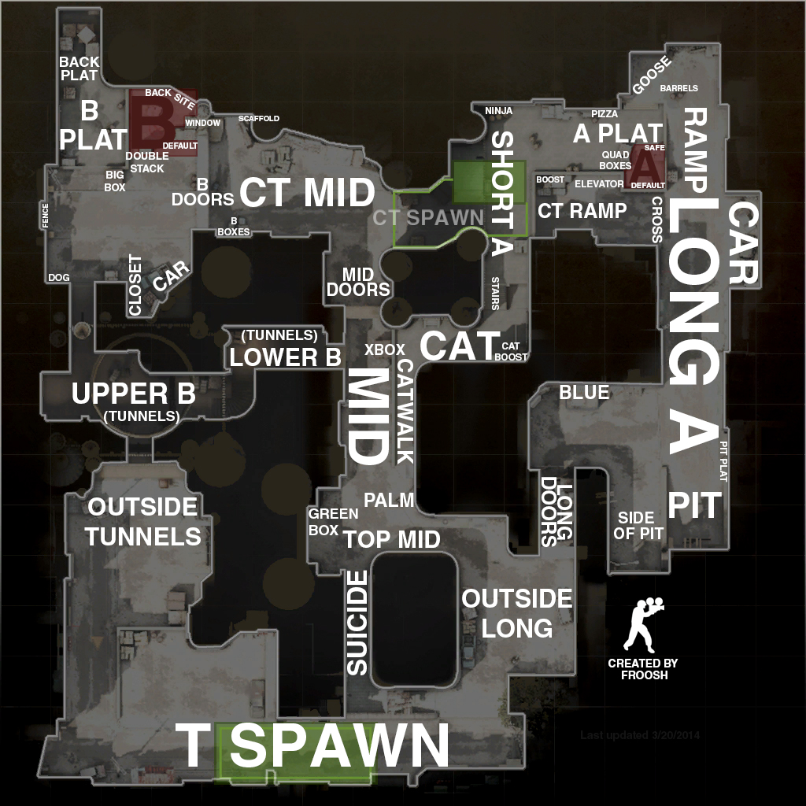
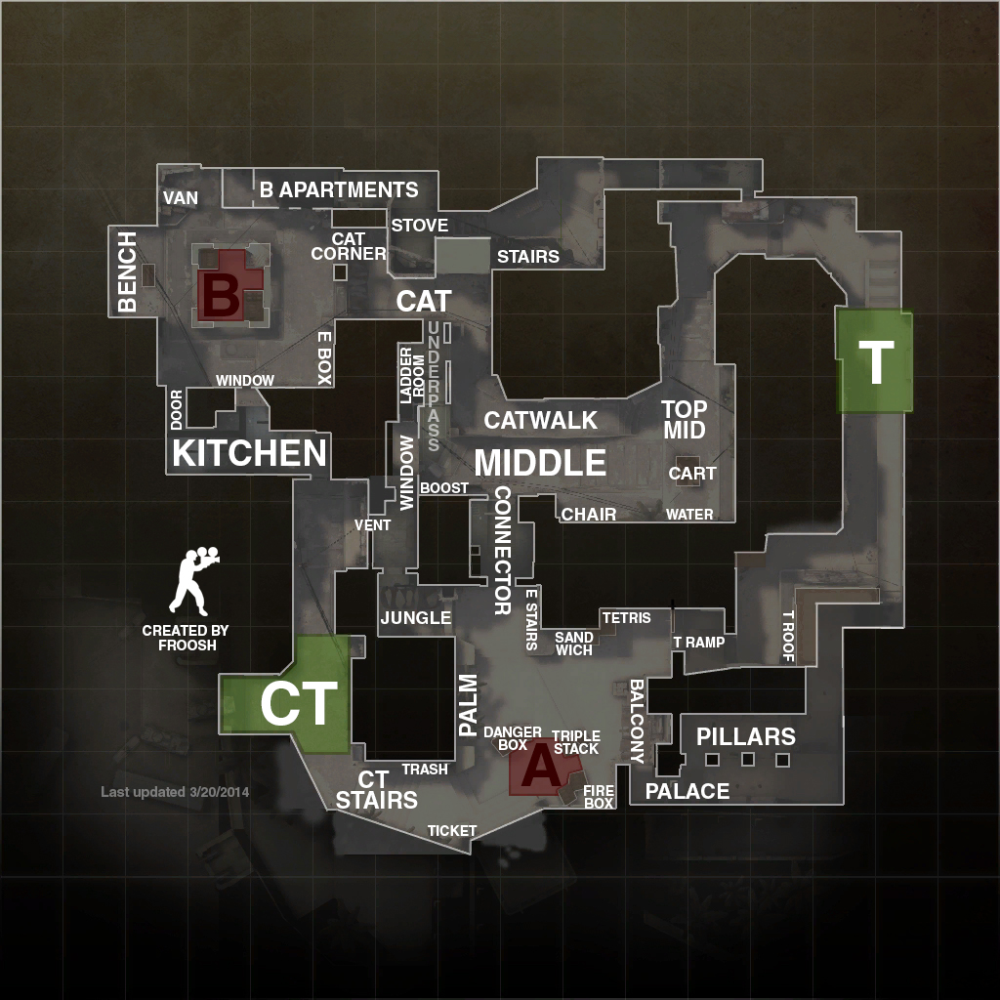
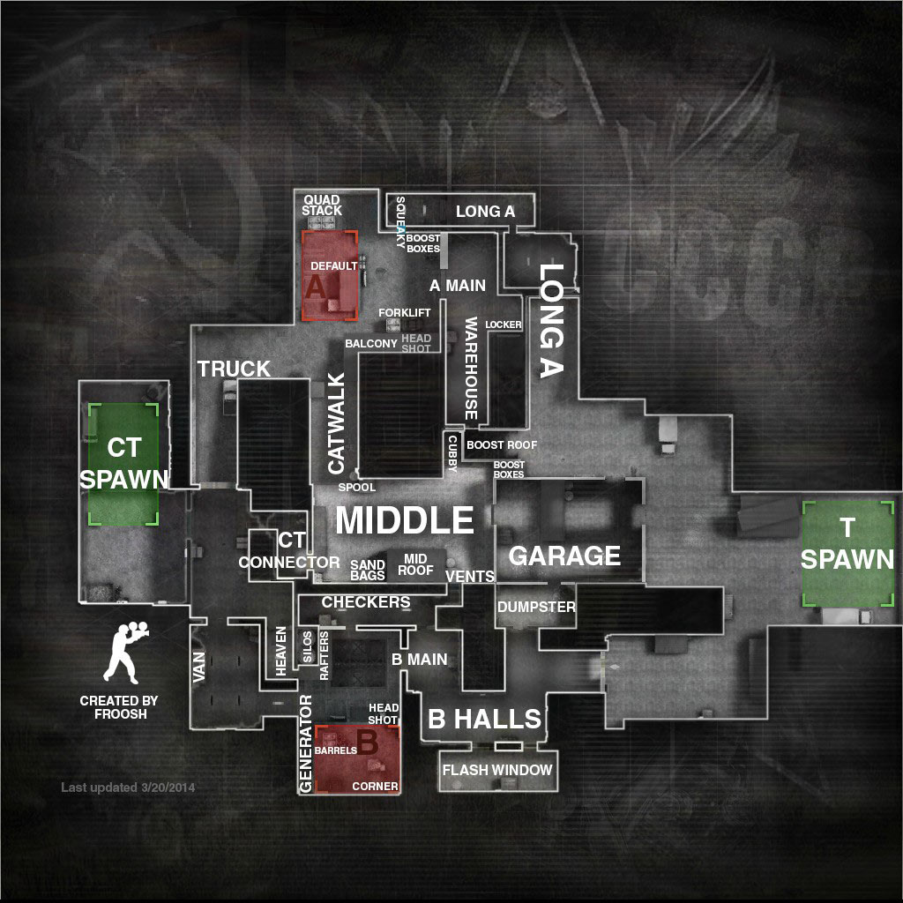

Dust 2 is one of the main maps on CSGO competetive. The map appears to be based in the Middle East due to the terrain and the buildings. The terrain is dusty and the buildings are similar to most buildings in the Middle East as they are of a similar style. Dust 2 is one of the most played and popular maps in CSGO due to people enjoying the different strategies that they can use on the map.
Mirage is another one of the popular maps within CSGO. Just like Dust 2 it also appears to be based in the Middle East due to the buildings and terrain; they are both very similar and they both have a middle path which can lead to either site. Mirage is a medium sized map which can lead to great team coordination and is maybe why it is amongst the popular maps in CSGO.
Cache is based in Ukraine and from the Terrorist spawn you can see the Chernobyl Power Plant. Cache is similar to Dust 2 and Mirage in which it has a middle pathway in which you can go to either site; A or B. This map is gaining more and more popularity due to the map being used in the official map pool for tournaments which makes more people want to play and learn the map in order for them to become pros.
